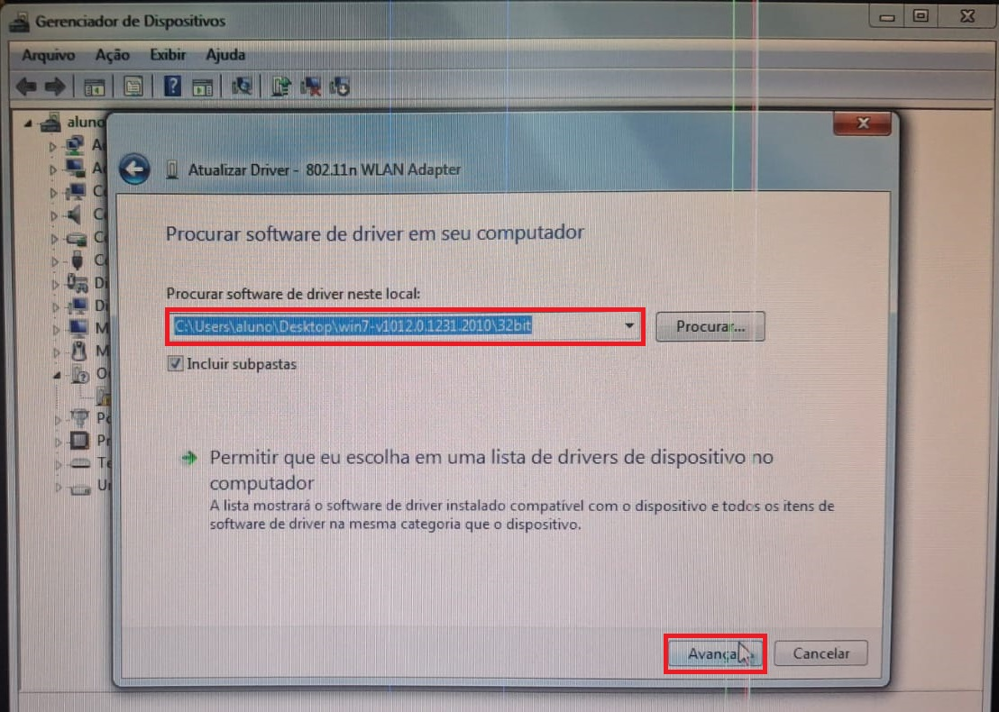

Drivers Desatualizados ou Corrompidos e a Sua Solução
Drivers são os programas que permitem que o sistema operacional se comunique com as peças do computador, como a placa de rede, a placa de vídeo e o som. Quando um driver está faltando, desatualizado ou corrompido, o dispositivo deixa de funcionar ou causa travamentos e telas azuis. Em computadores antigos isso acontece com frequência, pois após formatar o computador o sistema não traz os drivers de peças antigas, e muitos fabricantes não lançam mais drivers para as versões novas do Windows. Durante o nosso trabalho no laboratório, passamos por esse problema com a placa de rede sem fio, que aparecia no Gerenciador de Dispositivos como "802.11 WLAN Adapter" com um ponto de exclamação amarelo.
Possíveis causas
As principais causas são a falta do driver após uma formatação, um driver corrompido por uma atualização malsucedida ou por vírus, e a instalação de um driver incompatível com o sistema, seja por ser de outra versão do Windows ou de outra arquitetura (32 ou 64 bits). Para identificar o problema, basta abrir o Gerenciador de Dispositivos e procurar dispositivos com ponto de exclamação ou que aparecem em "Outros dispositivos". No Linux, o comando "lspci -k" mostra as peças do computador e qual driver cada uma está usando.
Solução
Para resolver, primeiro é preciso descobrir qual é a peça. Nas propriedades do dispositivo, na aba "Detalhes", a opção "IDs de hardware" mostra os códigos do fabricante e do modelo, que podem ser pesquisados na internet. Depois, em outro computador, baixa-se o driver no site do fabricante na versão correta do sistema e passa-se o arquivo por pen drive. No Gerenciador de Dispositivos, clica-se com o botão direito sobre o dispositivo, em "Atualizar driver" e em "Procurar software de driver no computador", selecionando a pasta do driver. Foi assim que resolvemos o problema da placa de rede sem fio, usando o driver da Realtek para Windows 7 de 32 bits.
Se o driver estiver corrompido, a opção "Reverter driver" volta para a versão anterior, ou então pode-se desinstalar o dispositivo e instalar o driver novamente. No Ubuntu, a ferramenta "Drivers adicionais" procura e instala os drivers que estão faltando.
